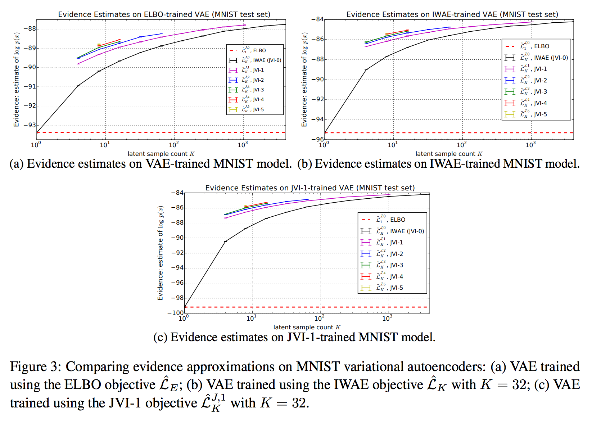
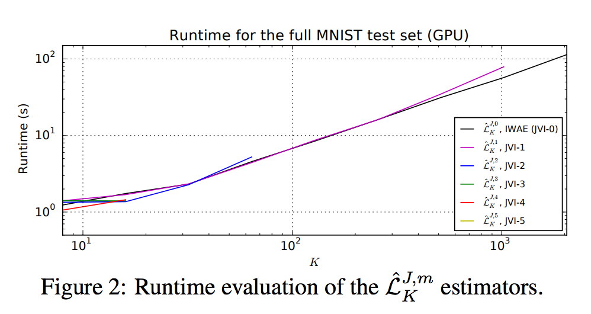
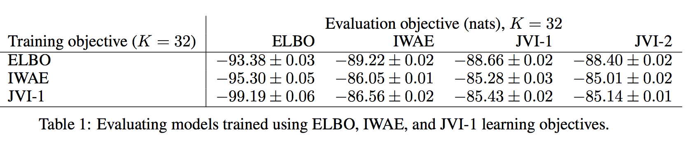

Debiasing Evidence Approximations: on Importance-Weighted Autoencoders and Jackknife Variational Inference
Введение
Авторы статьи развивают идеи "IWAE" Burda et al. (2015) в своей работе. Основной их вклад в том, что они уменьшают смещение без сильного увеличения вычислительных затрат. Рассмотрим для начала идею IWAE для того, чтобы перейти дальше к рассмотрению предложенной авторами нижней оценки.
Обзор известных техник
Вариационный вывод можно свести к максимизации Evidence, \(p(X)\) представима через importance sampling
\[ \begin{align} p(X) & = \int p(X|z)p(z)dz\\ & = \int q(z)\frac{p(X|z)p(z)}{q(z)}dz\\ \end{align} \]
Применив здесь логарифм и неравенство Йенсена получим
\[ \log p(X) = \log \left( \int q(z)\frac{p(X|z)p(z)}{q(z)}dz \right) \ge \int q(z|X)\log \frac{p(X|z)p(z)}{q(z|X)}dz = \mathcal{L}_E \]
На практике \(\mathcal{L}_E\) оценивается несколькими сэмплами \(z_k \sim q(z|X)\)
\[ \hat{\mathcal{L}}_E = \frac{1}{K}\sum_{k=1}^{K}\log \frac{p(X|z_k)p(z_k)}{q(z_k|X)} \]
Что предложили Burda et al. (2015): изменить оценку, немного убрав смещение \[ \log p(X) \ge \mathbb{E}_{z_1 \dots z_k \sim q(z|X)} \left[ \log \frac{1}{K}\sum_{k=1}^{K}\frac{p(X|z_k)p(z_k)}{q(z_k|X)} \right] = \mathcal{L}_K \]
Все, что изменилось, это порядок, сначала берется эмпирическая оценка \(p(X)\) и только потом применяется неравенство Йенсена. При этом показано, что
\[ \mathcal{L}_E = \mathcal{L}_1 \le \mathcal{L}_2 \le \mathcal{L}_3 \le \dots \le \mathcal{L}_{\infty} = p(X) \]
Далее авторы показывают, что смещение такой оценки имеет порядок \(O(1/K)\) с коэффициентом \(\mu_2 / \mu^2\). При \(K=1\), стандартный случай, эта величина довольно существенна. Дисперсия при этом имеет такой же порядок с коэф. \(\mu_2^2 / \mu^2\). Получается, что такая оценка только асимптотически хорошая: состоятельная и несмещенная. На практике, получить несмещенную (без асимтотик) оценку можно зная первые и вторые моменты. К сожалению моменты не известны, оценка смещенная.
Jackknife
Подход, который предложили авторы известен достаточно давно, но к варвыводу его никто не применял. Идея состоит в следующем. Почти любая эмпирическая оценка представима в виде
\[ \mathbb{E}\left[\hat{T}_n\right] = T + \frac{q_1}{n} + \frac{q_2}{n^2} + \frac{q_3}{n^3} + \dots \]
Теперь посчитаем оценки для \(n\) и \(n-1\) , домножим на \(n\) и \(n-1\), вычтем друг из друга, то получим следующее упрощение
\[ \mathbb{E} \left[ n\hat{T}_n - (n-1)\hat{T}_{n-1} \right] = T + O(n^{-2}) \]
Данное упрощение справедливо при если оценка представима в виде формы выше. Наша таковой является, поэтому метод применим.
Для получения оценок \(\hat{T}_n\) и \(\hat{T}_{n-1}\) можно использовать выборку размера \(n\). Для \(\hat{T}_n\) используем все сэмплы, для \(\hat{T}_{n-1}\) считаем на \(n\) подмножествах размера \(n-1\) и усредняем.
Generalized Jackknife
После того, как трюк Jackknife применен один раз, все условия для последующего применения теоремы сохраняются и его можно использовать еще раз. Этот прием придумали еще в далеком 1971 (Schucany et al.) и даже посчитали необходимые коэффициенты суммирования каждой из оценок. Выглядит это так
\[ \begin{align} \hat{T}_G^{(m)} &= \sum_{j=0}^m c(n, m, j) \hat{T}_{n-j} \\ c(n, m, j) &= (-1)^j\frac{(n-j)^m}{(m-j)!j!} \end{align} \]
Такая оценка уже дает смещение порядка \(O(m^{-(j+1)})\) (мне кажется, что авторы опечатались и должно быть \(O(n^{-(m+1)})\)) что впечатляет. Тем не менее, приходится платить дисперсией
\[ \mathbb{V}[\hat{T}_G^{(m+1)}] \gt \mathbb{V}[\hat{T}_G^{(m)}] \]
Jackknife Variational Inference
Теперь о том, как это используется в вариационке. Требуется только заменить \(\hat{T}\) на \(ELBO_K\). \[ \begin{align} \hat{\mathcal{L}}_K^{J,m} &= \sum_{j=0}^m c(K, m, j) \bar{\mathcal{L}}_{K-j} \\ \bar{\mathcal{L}}_{K-j} &= \frac{1}{ C_K^{K-j} }\sum_{i=1}^{C_K^{K-j}}\hat{\mathcal{L}}_{K-j}(Z_i^{(K-j)}) \end{align} \] В обобщенной оценке по Jackknife используются оценки \(ELBO\) по выборкам разного размера. Чтобы избежать повторного дорогого сэмплирования, используются оценки усредненные по всем возможным подмножествам заданного размера. Вычислительная сложность от этого вырастает не сильно, так как вычислительный граф может переиспользовать \(w_i=\frac{p(X|z_k)p(z_k)}{q(z_k|X)}\).
Эксперименты
Bias
Авторы показали качественное улучшение стохастических оценок по сравнению с ранними работами.

Вычислительная сложность предложенного подхода зависит преимущественно от \(K\), как и ожидалось

MNIST
Конечно, их подход убирает смещение, и всем хорош. Они показали себя горазло лучше, чем стандартная стохастическая оценка на ELBO. Что интересно, у них получилось не сильно лучше обучить автоэнкодер, чем Burda et al. (2015).
